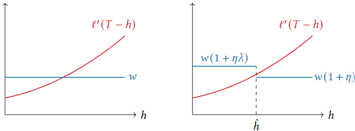
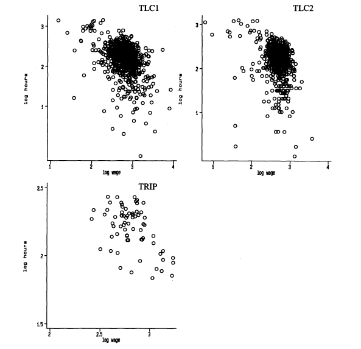

Reference-dependent preferences
Loss aversion, endogenous reference points
- The central orange circles have the same size.
- The central orange squares have the same color.
Reference-dependence in Kahneman & Tversky (ECTA, 1979)
A disease threatens 600 people.
| (A) Save 200 for sure |
(C) 400 will die |
(B) ⅓ chance save 600
⅔ chance save 0 |
(D) ⅓ chance none die
⅔ chance 600 die |
73 % choose A over B and 78 % choose D over C.
Reference-dependence in Kahneman & Tversky (ECTA, 1979)
A disease threatens 600 people.
| (A) Save 200 for sure |
(C) 400 will die |
(B) ⅓ chance save 600
⅔ chance save 0 |
(D) ⅓ chance none die
⅔ chance 600 die |
- This challenges classical theory because A and C lead to the same outcome and so do B and D. The example violates the invariance assumption of classical theory.
Invariance
- Invariance is not an explicit axiom of decision theory, but it is implied by the framework.
- We started out by defining utilities over outcomes. This implicitly assumes that agents only care about what will happen, but not how they get there.
- E.g., if 400 out of 600 people die, it does not matter to the agent whether they “saved” 200 or “killed” 400; both acts lead to the utility \(u(\text{200 alive}).\)
- The example challenges the invariance dogma.
Reference-dependence as a reason for framing effects?
Individuals may prefer the saving framing because:
- In Q1, the safe option gains 200 lives, while in Q2, the safe option kills 400 people.
More systematic evidence (K&T 1979)
- Switching from gains to losses flips the modal lottery choice.
More systematic evidence (K&T 1979)
- When \(p\) is high, individuals are risk averse in the gain domain but risk seeking in the loss domain.
- This consistent with the life saving example.
Making sense
K&T propose to replace the utility function \(u\) over outcomes with a value function \(v\) over gains and losses.
The value function compares outcome \(z\) to reference point \(r.\)
- If \(z \geq r,\) gain domain.
- If \(z < r,\) loss domain.
Additional assumptions: \(\small v'(z - r) > 0,\,v''(z-r) < 0\text{ if }z\geq r,\, v''(z-r) > 0\text{ if }z < r\)
Illustration
In Problem 9, K&T find the modal choices: \[
\begin{aligned}
&(4000,.25;2000,.25;0,.5) \quad &\succ& \quad (6000,.25;0,.75), \\
&(-6000,.25;0,.75) \quad &\succ& \quad (-4000,.25;-2000,.25;0,.5)
\end{aligned}
\]
Gains: \(\small\pi(.25)[v(4k) + v(2k)] > \pi(.25)v(6k) \Rightarrow v(4k) + v(2k) > v(6k)\)
- \(v\) needs to be concave in gains to accomodate this.
Losses: \(\small\pi(.25)[v(-4k) + v(-2k)] < \pi(.25)v(-6k)\)
\(\Rightarrow v(-4k) + v(-2k) < v(-6k)\)
- \(v\) needs to be convex in losses to accomodate this.
Value function and loss aversion
- K&T make a persuasive argument that individuals treat losses differently from gains.
- Their results can be captured by a value function that is concave in gains and convex in losses.
Value function and loss aversion
- In addition, they assume loss aversion: \(v\) is steeper for losses than for gains.
- Even though they don’t need loss aversion to explain the data and they provide no evidence for it, loss aversion perhaps is the most influential idea coming out of K&T.
Prospect Theory
Combining probability weighting ✚ loss‑averse value function, we have Prospect Theory.
The fourfold risk‑attitude pattern is PT’s most celebrated prediction.
| Low |
Risk‑seeking |
Risk‑averse |
| High |
Risk‑averse |
Risk‑seeking |
Can explain why the same people seek-out insurance and gamble.
- Insurance: Low probability loss; gambling: Low probability gain.
Applications of loss aversion
Endowment effect
Thaler (JEBO, 1980) tells the following story.
Story. Mr R bought wine at $5/bottle in 1958. A merchant later offers $100 per bottle; he refuses, though he never pays more than $35 for a bottle.
- This example is hard to rationalize with EU:
- Not selling at wealth \(y\) for $100 implies \(\small u(\text{1 wine}, \$y) > u(\text{0 wine}, \$100 + \$y).\)
- Not buying for $35 implies \(\small u(\text{1 wine}, \$y - \$35) < u(\text{0 wine}, \$y).\)
Endowment effect
Thaler (JEBO, 1980) tells the following story.
Story. Mr R bought wine at $5/bottle in 1958. A merchant later offers $100 per bottle; he refuses, though he never pays more than $35 for a bottle.
- Assuming that \(u\) increases in money, the choices imply: \(\scriptsize u(\text{1 wine}, \$y) > u(\text{0 wine}, \$100 + \$y) > u(\text{0 wine}, \$y) > u(\text{1 wine}, \$y - \$35)\)
This would only be possible were \(u\) extremely concave around \(\$y\).
Endowment effect
Thaler (JEBO, 1980) tells the following story.
Story. Mr R bought wine at $5/bottle in 1958. A merchant later offers $100 per bottle; he refuses, though he never pays more than $35 for a bottle.
- Using loss aversion: \(\small v(-\text{1 wine}) + v(\$100) < v(0),\,v(\text{1 wine}) + v(-\$35) < v(0)\) \(\small\Rightarrow v(\$100) < -v(-\text{1 wine}),\,v(\text{1 wine})< -v(-\$35).\)
Endowment effect
- LA can explain why people often feel reluctant to buy and to sell.
- This is known as the endowment effect.
- According to LA, the endowment effect occurs because:
- When people sell something, they encode it as a loss.
- When people buy something, they encode it as a gain.
- The joy of gain is smaller than the pain of equivalent loss.
- Consequently the willingness to pay (WTP) is smaller than the willingness to accept (WTA)
Endowment effect beyond Mr R
- Kahneman, Knetsch, Thaler (JPE, 1990) conduct an experimental test of the endowment effect.
- Participants randomly receive a mug or nothing.
- They are asked for their WTA (mug owners) or WTP (unlucky ones) for the mug.
- Elicitation incentivized using the
BDM Mechanism.
- The median WTA was $7 while the median WTP was $3.
- Clean evidence of the endowment effect.
Endowment effect in labor supply
- Camerer, Babckock, Loewenstein, Thaler (QJE, 1997) study cab drivers in NYC.
- These drivers face highly volatile wages. CBLT ask: How does this affect their labor supply?
Cab driver labor supply
- Consider a standard labor supply model. A worker enjoys consumption \(c\) and leisure \(\ell,\) given time budget \(T.\) They choose labor hours \(h\) with hwage \(w,\) allowing consumption \(c=wh.\)
- Assuming quasilinear preferences (\(\ell' > 0,\,\ell'' <0\)): \[
\small\underset{h}{\text{max}}\quad u(h) = wh + \ell(T - h).
\]
- This has first-order condition \(w = \ell'(T-h).\)
- Standard result: \(\small \frac{d h}{d w} = -\frac{1}{\ell''(T-h)}>0\) (hours increase in wages).
Adding loss aversion
- Suppose now that cab drivers are loss averse. \[
u_\lambda(h) = \underbrace{wh + \ell(T-h)}_{\text{Standard}} + \underbrace{g(wh - r).}_{\text{Gain-loss } u}
\]
- Idea: Cab drivers have a daily reference income \(r.\) If they earn less, they experience a loss. If they earn more, they experience a gain.
Adding loss aversion
- Suppose now that cab drivers are loss averse. \[
u_\lambda(h) = \underbrace{wh + \ell(T-h)}_{\text{Standard}} + \underbrace{g(wh - r).}_{\text{Gain-loss } u}
\]
- Gain-loss utility is a function: \[
g(wh - r) = \begin{cases}
\eta(wh-r),\, wh\geq r, \\
\lambda\eta(wh-r),\, wh < r.
\end{cases}
\]
- Above, \(\lambda > 1\) is the loss aversion parameter and \(\eta>0\) is a utility weight.
Consequences

- The left panel plots the solution w/o loss aversion.
- The right panel plots the solution w/ loss aversion.
Consequences
- The marginal benefit of working more jumps at \(\hat{h} =\frac{r}{w}.\)
- This is where working more turns losses into gains.
- Consequently, the optimal solution may be to work exactly \(\hat{h}\) hours. If so, hours decrease in \(w.\)
CBLT: Cab drivers work less as wages increase
High wage → reach daily‑income target sooner → quit
Taking stock
- Loss aversion has been crystalized as the most important reference-dependent preference in economic applications.
- It is regularly invoked to explain inertia and targeting behavior:
- The endowment effect as an explanaition of why individuals hang on to what they have.
- Income targeting in labor supply.
- Many more examples from sports, where runners may target running times, golfers target handicaps, etc.
However,
- With LA, we have to take a number of difficult conceptual decisions.
- What is a reference point?
- E.g., do cab drivers target income or working hours.
- Who experiences losses and why?
- I may be reluctant to sell my dinner table, but IKEA probably is not.
- Follow-up research tried finding more parsimonious ways of capturing gains and losses. We will learn about them next.
Expectations‑Based Loss Aversion (EBLA)
(Kőszegi & Rabin QJE 2006)
- K&R propose a theory of endogenous reference points that are governed by rational expectations.
- This should sound familiar to you.
- LA problem: We have a free model parameter \(r\).
- K&R solution: Say \(r\) is an expectation → assume expectations are rational → \(r\) is no longer a free parameter, but part of the model solution.
EBLA Model Setup
- Consider an agent with utility consisting of a material and a reference-dependent part: \[
\small u_{KR}(c|r) = m(c) + n(c|r).
\]
- \(c = (c_1,\ldots,c_K)\) is a \(K\)-dimensional consumption vector and \(r = (r_1,\ldots,r_K)\) is a \(K\)-dimensional reference vector.
- Utility is seperable accross dimensions: \[
\small m(c) = \sum_{k=1}^K m_k(c_k),\, n(c|r) = \sum_{k=1}^K n_k(c_k|r_k).
\]
- Utility is seperable accross dimensions: \[
\small m(c) = \sum_{k=1}^K m_k(c_k),\, n(c|r) = \sum_{k=1}^K n_k(c_k|r_k).
\]
- Gain-loss utility is piecewise linear: \[
\small
n_k(c_k|r_k) = \begin{cases}
\eta (m_k(c_k) - m_k(r_k)), m_k(c_k) \geq m_k(r_k) \\
\lambda\eta (m_k(c_k) - m_k(r_k)), m_k(c_k) < m_k(r_k).
\end{cases}
\]
- Here, \(\lambda > 1\) measures loss aversion and \(\eta>0\) is a utility weight.
The reference point
- K&R allow for consumption to be stochastic and be distributed according to a function \(f(c)\in\Delta\mathbb{R}^K.\)
- E.g., the agent may choose a lottery.
- Crucially, the reference point is also stochastic and distributed according to \(g(r)\in\Delta\mathbb{R}^K.\)
- E.g., when choosing a lottery paying either \(100\) or \(0,\) the agent may not have a clear reference point. This formulation allows for this.
The reference point
- Expected utility from holding reference point \(g(r):\) \[
\small U_{KR}(c|g) = \int_{r\in\mathbb{R}^K}u(c|r)g(r)dr.
\]
- Expected utility from expecting consumption \(f(c):\) \[
\small U_{KR}(f|g) = \int_{c\in\mathbb{R}^K}\left(\int_{r\in\mathbb{R}^K}u(c|r)g(r)dr\right) f(c) dc.
\]
Example
- Suppose that there is only one dimension (\(K=1\)).
- Suppose that the reference point is a lottery \(g = (100,p;0,1-p)\) and the agent evaluates a sure payment of \(50\) (\(f = (50,1)\)).
- The agent evaluates this sure payment as a mixture of a gain and loss: \[
U_{KR}(f|g) = p\cdot u(50|100) + (1-p)\cdot u(50|0).
\]
Example’
- Keep the reference point the same but now suppose that the agent’s consumption lottery is \(f' = (200, q; -200, 1-q).\)
- Then: \[
\begin{align*}
\small U_{KR}(f'|g) &= p[q u(200|100) + (1-q)u(-200|100)] \\
\small &+ (1-p)[q u(200|0) + (1-q) u(-200|0)].
\end{align*}
\]
Why this may help
- The stochastic reference point allows us to make the reference point endogenous to choices.
- Suppose the agent chooses lottery \(L=(100,p;0,1-p)\). They may plausibly perceive winning \(100\) more like a gain and winning \(0\) more like a loss.
- We can now formalize this by assuming that \(r=L:\) \[
\begin{align*}
\small U_{KR}(L|L) = p[p u(100|100) + (1-p)u(0|100)] + \\
\small (1-p)[p u(100|0) + (1-p) u(0|0)].
\end{align*}
\]
Personal equilibrium
K&R formalize the idea that reference points are endogenous to choices.
Definition. A selection \(L\in \mathcal{C}\) is a personal equilibrium if for all \(L'\in \mathcal{C}\) \(U_{KR}(L|L)\geq U_{KR}(L'|L).\)
Note that an equilibrium is a solution concept. We can use it to simultaneously solve for the agent’s consumption and reference point.
Buying shoes
- Suppose our agent goes shopping for shoes. Set \(K=2,\) with \(c_1\in\{0,1\}\) denoting whether they bought shoes and \(c_2\in\mathbb{R}\) denoting money. We assume that everything is linear: \[
u_{KR}(c|r) = c_1 + c_2 + \mu(c_1|r_1) + \mu(c_2|r_2).
\]
- Buying shoes costs \(p.\) There are two possible outcomes. Either A buys so that \(c = (c_1 = 1, c_2 = -p)\) or A doesn’t buy; \(c = (c_1 = 0, c_2 = 0).\)
- Buying shoes costs \(p.\) There are two possible outcomes. Either A buys so that \(c = (c_1 = 1, c_2 = -p)\) or A doesn’t buy; \(c = (c_1 = 0, c_2 = 0).\)
- Buying is an equilibrium if \[
u_{KR}((1,-p)|(1,-p)) \geq u_{KR}((0,0)|(1,-p)).
\]
- Why? If I expect to buy, my expectation is that I will end up with more shoes and less money. For this expectation to be justified, I must not have an incentive to violate my expectations and not buy.
Buying is an equilibrium if \[
u_{KR}((1,-p)|(1,-p)) \geq u_{KR}((0,0)|(1,-p)).
\]
If A buys expecting to buy, A’s expectations are fulfilled; A neither experiences gain or loss. Hence, utility is equal to material utility: \[
u_{KR}((1,-p)|(1,-p)) = 1 - p.
\]
Buying is an equilibrium if \[
u_{KR}((1,-p)|(1,-p)) \geq u_{KR}((0,0)|(1,-p)).
\]
If A does not buy expecting to buy, two things happen.
- A experiences a loss in the shoe domain (expected \(1\) but received \(0\)).
- A experiences a gain in the money domain (expected \(-p\) loss but spent \(0\)). \[
u_{KR}((0,0)|(1,-p)) = \lambda\eta(0 - 1) + \eta(0-(-p))
\]
Buying is an equilibrium if \[
u_{KR}((1,-p)|(1,-p)) \geq u_{KR}((0,0)|(1,-p)).
\]
Plugging in what we found, buying is an equilibrium if: \[
1 - p \geq \lambda\eta(0-1) + \eta (0 - (-p)) \Rightarrow
p \leq \frac{1 + \eta\lambda}{1 + \eta}.
\]
- Analogous calculations show that not buying is an equilibrium if \[
p \geq \frac{1+\eta}{1+\lambda\eta}.
\]
We can combine what we’ve learned to derive A’s demand function.
(Both buying and not buying are an equilibrium in the overlapping middle region.)
- This differs in two ways from classical demand:
- Under classical demand, A buys whenever \(p\leq\text{material utility}.\) Here, if \(p\leq 1.\)
- Under classical demand, A either buys or doesn’t buy, with no multiple equilibria.
- This differs in two ways from classical demand:
- Under classical demand, A buys whenever \(p\leq\text{material utility}.\) Here, if \(p\leq 1.\)
- Under classical demand, A either buys or doesn’t buy, with no multiple equilibria.
- This is due to a complementarity between demand decision and gain-loss utility:
- A plans to buy → would feel a shoe loss from not buying → increased WTP.
- A plans not to buy → would feel a money loss from buying → decreased WTP.
Testing EBLA
- EBLA is an elegant, parsimonious way to deal with the reference point, but is it empirically valid?
- Abeler, Falk, Goette, and Huffman (AER, 2011) experimentally test whether reference points are sensitive to expectations.
- Participants can earn money by counting zeroes. Q: Does their counting effort depend on their expectations?
AFGH (2011) Design
- Participants can count up to one hour. At the end, they receive a payment:
- With 50%, receive 20 cents per table.
- With 50%, receive either 7€ (HI treatment) or 3€ (LO treatment)
- EBLA prediction: Participants in HI expect more than those in LO. Thus, they experience potentially higher losses. They should work harder.
AFGH (2011) Results
Participants in HI count on average more tables than in LO. This is in line with EBLA.
So EBLA is a resounding success?
Some pushback comes from Gneezy, Goette, Sprenger, Zimmermann (JEEA, 2017). They use the AFGH design but explore a larger parameter space.
Same task, but participants either receive a high payment \(H\) with probability \(p\), a low payment \(L\) with probability \(q\), or are paid a piece rate for their effort with \(1-p-q.\)
Treatments vary values of \(H,p,L,q\).
GGSZ results
The left panel, middle two dots replicate, and confirm, AFGH experiment results. Far left and far right observation test even higher and lower fixed payment.
GGSZ results
We would expect increasing effort. Why not? One possible reason is that, e.g., 14 is simply far too high to have any behavioral effect.
GGSZ results
The right panel varies the probability of receiving a \(H\) fixed payment instead of \(L\). Here, EBLA predicts a monotonous increase.
Later developments
- A possible explanation for the mixed support may be that not everyone is universally loss averse and may even be loss seeking. Then, we might not always see homogenous effects.
- One experiment by Campos-Mercade, Goette, Graeber, Kellog, Sprenger (WP, 2023) looks into this.
- They have a framework in which the loss aversion parameter \(\lambda\) can be \(>1\) (loss averse) or \(<1\) (loss seeking).
- They empirically investigate labor supply in a stated effort task.
Stated effort
- With stated effort, participants ex-ante declare how much they will work.
- E.g., they are given a wage schedule, decide that they will solve \(X\) tasks and then have to stay until they have solved \(X\).
- This is useful because it allows the experimenter to identify labor supply functions within individuals:
- A participant may declare they will work \(X'\) if wage is \(w'\) and \(X''\) if wage is \(w''.\) Then, one wage schedule is randomly drawn and the respective decision is implemented.
CGGKS: Design
- There is a task to elicit \(\lambda\) on the individual level. (We will skip this now, but see the exercise sheet.)
- Stated effort task under two conditions:
- LOW: Receive $0 with 45%, receive $20 with 5%, be paid for effort performance with 50%
- HIGH: Receive $0 with 5%, receive $20 with 45%, be paid for effort performance with 50%
- Same idea as earlier: If loss averse, work more in HIGH than in LOW.
CGGKS: Not everyone is loss averse
CGGKS: Treatment effect is stronger for higher ind. LA estimates
- Average TE increases in \(\lambda\) (left panel).
- Going from LOW to HIGH, more positive TEs among those with higher \(\lambda\) (right panel).
Wrapping up
- Reference-Dependent Preferences:
- Frames influence perception of outcomes as gains or losses.
- Violates classical invariance assumption in decision theory.
- Prospect Theory (PT):
- Combines probability weighting and a loss-averse value function.
- Predicts fourfold risk attitudes: risk-seeking for low-probability gains and high-probability losses; risk-averse otherwise.
- Applications of Loss Aversion:
- Endowment Effect: Reluctance to trade due to loss aversion.
- Labor Supply: Income targeting.
- Expectations-Based Loss Aversion (EBLA):
- Reference points are endogenous and based on rational expectations.
- Clarifies how expectations are endogenous to decisions. This can lead to multiple equilibria because of decisions and expectations are complements.
- Empirical Evidence:
- Mixed support for EBLA in experiments (e.g., Abeler et al. 2011, Gneezy et al. 2017).
- Heterogeneous loss aversion (Campos-Mercade et al. 2023) shows stronger effects for highly loss-averse individuals.
- Key Takeaways:
- Frames and reference points drive decisions.
- LA explains important behavioral regularities (endowment effect, income targeting).
- EBLA adds discipline.